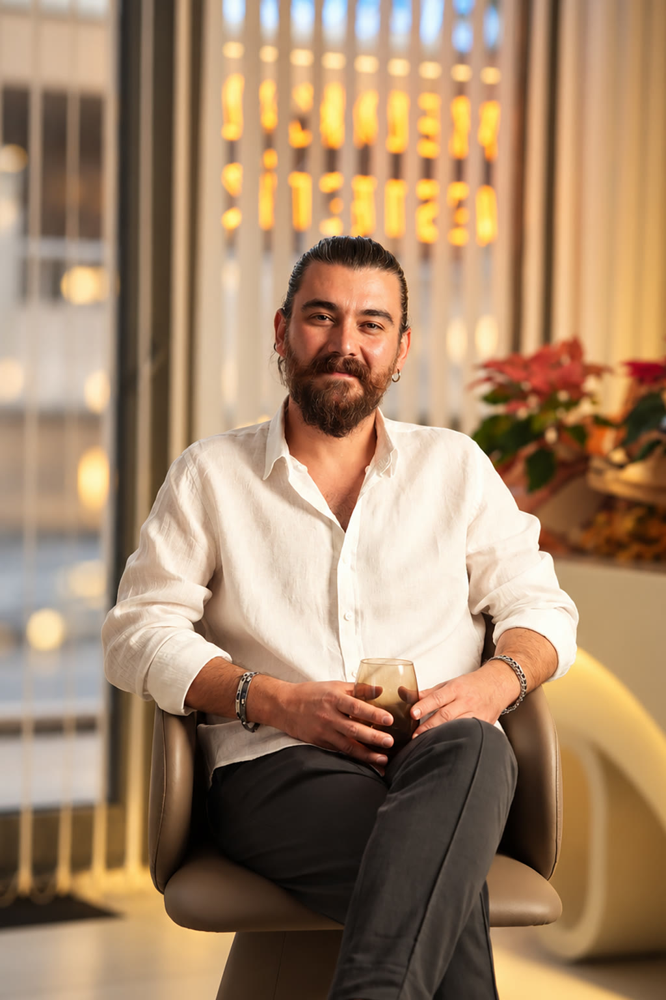

Resmi Yetkinlik
Estetik ve Kozmetik Uygulamaları Sertifikası
T.C. Sağlık Bakanlığı • 05 Aralık 2025
Medikal Estetik ve Kozmetik Hekimi
Dr. Erdem Çalışkan

Eğitim ve meslek yolculuğunun önemli dönüm noktalarından biri 2004 yılında ÖSS'de elde ettiği dereceyle başladı. Sonraki yıllarda Sivas’tan Sakarya’ya uzanan bu yoğun süreç; farklı hastaneler, poliklinikler ve hasta profilleriyle çalışarak çok yönlü klinik deneyim kazanmasını sağladı.
2013 yılından itibaren aktif olarak hekimlik yapan, Sivas ve Sakarya'da çeşitli kamu hastaneleri ile Aile Sağlığı Merkezleri'nde uzun yıllar hizmet veren Dr. Erdem Çalışkan, kariyerini estetik ve medikal prosedürlere yöneltmeye karar verdi.
Bugün, hekimlik deneyimini medikal estetik uygulamalarıyla birleştirerek Sakarya Serdivan'daki kliniğinde, güzelliği tıbbi güvenlikle harmanlamaya devam ediyor.
"Gerçek estetik başarı, çevrenizin 'ne yaptırdın' diye sorması değil, 'ne kadar iyi görünüyorsun' demesidir."
EĞİTİM & DENEYİM
Sakarya / Serdivan’da Medikal Estetik ve Kozmetik Hekimi olarak hizmetini sürdürüyor.
Sağlık Bakanlığı onaylı Medikal Estetik ve Kozmetik Uygulamaları Sertifikası'nı tamamlayarak alanındaki yetkinliğini perçinledi.
Sapanca Baştabipliği, Kocaali, SAÜEAH, Yenikent hastanelerinde görev yaptı. Ardından uzun yıllar Aile Hekimi olarak klinik tecrübesine derinlik kattı.
Sivas İmranlı İlçe Hastanesi'nde başlayarak sağlık sektöründeki kariyerinin ilk sağlam temellerini attı.
2004 yılındaki başarılı lise sonu (ÖSS) dönemi ve sonrasında tıp fakültesi eğitimiyle başlayan mesleki hikaye.
Bölgedeki medikal estetik standartlarını yükseltmeyi amaçlayan Dr. Çalışkan, teknoloji ile tıbbı güvenli bir zeminde buluşturuyor. Alanındaki tüm güncel sempozyumları ve medikal makaleleri yakından takip ederek klinik uygulamalarını daima en modern yöntemlere adapte eder.
SERTİFİKALAR & EĞİTİMLER
T.C. Sağlık Bakanlığı • 05 Aralık 2025
FAYS Academy & ICC W • 23 Aralık 2023
Bolat Akademi • 15 Mayıs 2024
Facebosphorus Bilim Kurulu • 17-18 Mayıs 2025
Güncelleme yapılıyor
KLİNİK PRENSİPLER
Yüzün sadece bir bölgesine odaklanmak yerine oranları bir bütün olarak değerlendirir.
Hastanın ihtiyacı olmayan, yüz anatomisine uygun bulmadığı hiçbir işlemi yapmayı önermez.
FDA veya CE onaylı, güvenilirliği ve vücutla uyumu kanıtlanmış orijinal medikal markaları tercih eder.
ÖNCESİ / SONRASI